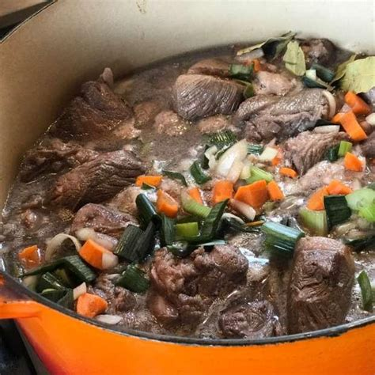
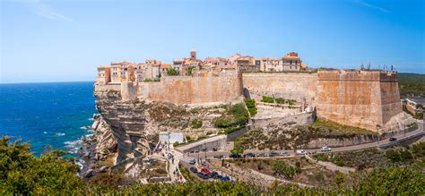
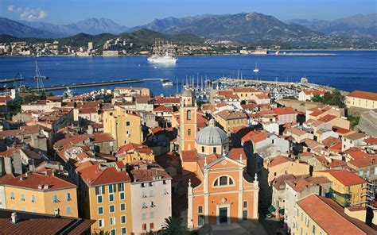
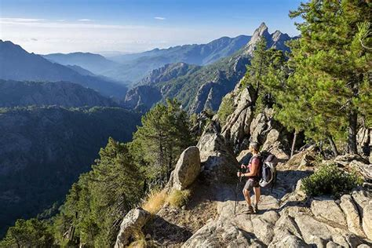
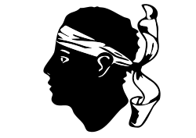
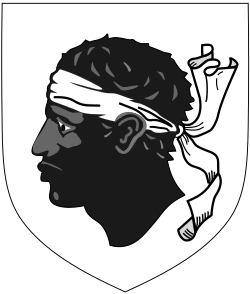

Corse
Présentation
La Corse est une île méditerranéenne montagneuse appartenant à la France, mais possédant une identité unique. Connue pour ses plages préservées, ses villages historiques et son intérieur montagneux, elle reflète un subtil mélange de cultures française et italienne. C’est aussi le lieu de naissance de Napoléon Bonaparte et un bastion de la langue et des traditions corses.
Informations rapides
- Capitale: Ajaccio
- Langues régionales: Corse (Corsu)
- Population: ~340 000
- Réputée pour: Plages sauvages, sentier GR20, Napoléon, chants polyphoniques corses
- Le saviez-vous? Le corse, bien que non officiel, est protégé et largement parlé.
Plats populaires
Figatellu

Brocciu

Polenta de châtaigne

Civet de sanglier

Monuments Célèbres
Réserve naturelle de Scandola

Calanques de Piana

Citadelle de Bonifacio

Vieille ville d’Ajaccio

Sentier GR20

Période idéale pour visiter
La meilleure période pour visiter la Corse est au printemps (avril à juin) ou en début d’automne (septembre–octobre) lorsque le climat est agréable et les lieux moins fréquentés.
Symboles régionaux
- Drapeau: 
- Blason: 